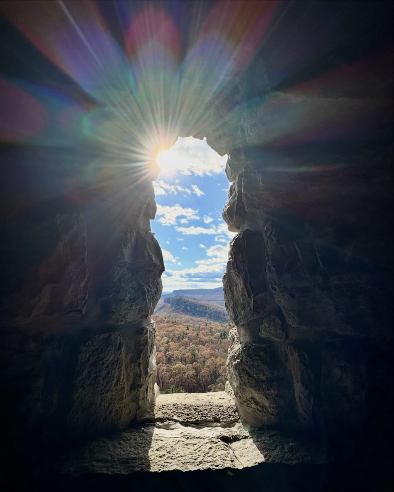

Research
My recent research focuses on FPGA-based architectures, with an emphasis on power monitoring and side-channel attack analysis. I explore how hardware-level implementations can be optimized for performance and energy efficiency while maintaining robust security. By leveraging real-time power measurements and FPGA prototyping, my work aims to uncover and mitigate vulnerabilities arising from power side channels, contributing to the development of more secure and trustworthy hardware systems.
Engineering Journey
My engineering journey has always been about getting my hands dirty at the intersection of hardware and software. It started at the University of Tabriz, where I first worked with FPGAs to explore dynamic reconfiguration methods. From there, I jumped into the RISC-V ecosystem as an intern, designing Coarse-Grained Reconfigurable Architectures (CGRAs) and writing C/C++ software to get embedded CPUs up and running.
Building on that foundation, I relocated to Portugal to join the University of Lisbon as a Research Assistant. There, I tackled high-throughput PCIe-FPGA interfaces using RIFFA and successfully ported the RNNoise deep learning audio filter directly onto hardware. During this time, I also spent a highly rewarding period at IObundle, Lda, working as an Embedded Hardware Developer where I contributed to hardware-software integration and repository maintenance alongside my adviser. Later I joined Binghamton University to continue my PhD studies.
Beyond my technical work, I firmly believe that innovation means little if we aren't sharing it with the community. I genuinely love breaking down complex technology for younger students. As a STEM volunteer in local Binghamton school districts, I put Raspberry Pis and FPGAs directly into the hands of elementary and middle schoolers to show them what they are capable of building. To keep that momentum going outside the classroom, I collaborate with our team to produce YouTube tutorials and maintain a university-hosted project website.
Within the academic community, I also enjoy doing my part behind the scenes. I care deeply about the student experience at Binghamton University. Having been elected to the Student Advisory Committees for both the School of Computing and the Watson College Dean, I work directly with university leadership to turn actual student feedback into tangible, actionable policy improvements.
Life Outside the Lab
When I step away from hardware debugging and compiler development, I enjoy spending time exploring the world beyond my desk. Traveling to new places, being outdoors, and capturing moments through photography help me slow down and see things from different perspectives. These experiences often remind me that curiosity, observation, and patience matter just as much in life as they do in research. They give me a chance to reflect, appreciate the people and places around me, and find inspiration in everyday moments. Here are a few snapshots from my life outside of academia.

Contact
You can reach me via email or find more about me on my GitHub and LinkedIn profiles.